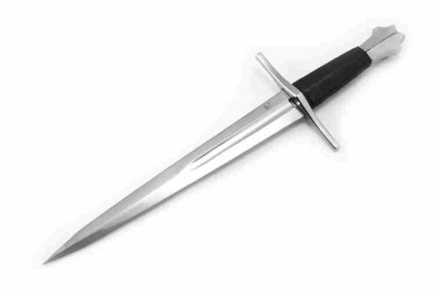

Causas e características
Durante a Idade Média (século V ao XV), a Europa foi palco de inúmeras guerras sangrentas que levaram a morte para milhares de pessoas.
Estas guerras aconteciam por diversos motivos: disputas territoriais, saques, questões políticas, rivalidades familiares e aumento de poder.
Estas guerras aconteciam entre feudos (unidade territorial típica da Idade Média), reinos e até mesmo religiões. Neste último caso, podemos citar as Cruzadas, que foram batalhas entre cristãos e muçulmanos. Também ocorreram muitas guerras entre reinos.
As relações de vassalagem e suserania mobilizavam grandes contingentes de cavaleiros e guerreiros para as guerras, as guerras envolviam a utilização de vários armamentos. Entre os pessoais, podemos citar espada, elmo, armadura e escudo (principais armamentos de um guerreiro). O cavalo era o meio de transporte usado para o deslocamento durante as batalhas.
Além dos instrumentos pessoais, podemos citar a catapulta (mecanismo usado para arremessar pedras ou objetos incandescentes). Esta arma era muito usada na invasão dos castelos.
As guerras eram lideradas pelo rei?
No início do período medieval, os reis germânicos tentaram manter a unidade territorial do Império Romano. Os reis germânicos eram chefes políticos e militares, pois atuavam à frente dos seus soldados em momentos de guerra.
Armas usadas na guerra
Espada
Nenhuma arma está mais associada à Idade Média do que a espada. Foi usado em todo o mundo medieval e,
como explica Sue Brunning , era mais do que apenas uma arma:

Toda cultura que fez e usou espadas os viu como objetos extraordinários. Eles aparecem
predominantemente na história, cosmologia e mitologia de comunidades em todo o mundo, da África ao
norte da Europa, do leste da Ásia ao subcontinente indiano. Seu apelo não é unicamente atribuível ao
fascínio oportuno da humanidade pela morte. Isso fica claro a partir do espectro de significados
ligados às espadas através do tempo e do espaço, abrangendo poder, sabedoria, alegria, proteção - e
medo.
Arco
Combine uma pauta de madeira flexível com barbante forte e você terá uma das armas mais conhecidas da
Idade Média.
Pode haver muitas variedades de arcos, e sua eficácia pode variar
significativamente de onde e como eles foram usados. Os arqueiros eram geralmente encontrados em
batalhas ou cerco em todo o mundo medieval, mas podiam se tornar uma força dominante nas
circunstâncias certas.
Os mongóis foram capazes de conquistar grande parte da Ásia e da Europa
através do uso de arqueiros de cavalos, que combinaram um tipo mais forte de arco com a maior
mobilidade de sua cavalaria. Os ingleses também confiariam em seus arqueiros para vencer várias
batalhas importantes durante a Guerra dos Cem Anos. Como Jim Bradbury escreve : "Não havia situação
militar em que o arco não pudesse ser útil".
Bestas
Embora essa arma existisse desde os tempos antigos, estranhamente não foi mencionada muito no início
da Europa medieval. Então, no século XII, a besta retornou, servindo como uma maneira de soldados
regulares lutarem contra os melhores cavaleiros blindados e equipados. Helen Nicholson descreve a
besta:
Não era uma arma rápida de usar, porque estender o arco (puxando a corda, prendendo-o com o
'gatilho' e colocando a flecha ou o ferrolho na posição, pronto para disparar) demorava muito mais
tempo do que o arco simples. Mas poderia ser usado efetivamente por um novato comparativo e era
muito mais poderoso que o simples arco. Em uma situação de cerco, ou onde um grande grupo de
arqueiros de besta estava operando em um campo de batalha, isso poderia ser devastador, pois poderia
perfurar cota de malha.
Embora a besta tenha sido criticada como uma arma desonrosa, seu uso só cresceu na Idade Média
posterior e, no século XV, as cidades estavam realizando torneios de tiro em grande escala. A besta
continuaria sendo uma arma muito usada, mesmo durante a próxima era das armas.
Alabardas
Eles eram chamados de alabardas, lanças, glaivas e vários outros nomes - todas eram variações de um tipo de arma em que alguém carregava uma vara longa e equipada com um tipo de lâmina que podia ser usada para cortar e empurrar. Eles se tornaram mais prevalentes na Europa por volta do ano 1300, pois era possível demonstrar que os exércitos que usavam essas armas podiam derrotar a cavalaria em batalha. A chave estava em criar formações e coordená-las no campo de batalha - como um grande grupo elas poderiam ser impenetráveis para atacar e mortíferas na ofensiva.
Punhal
Essencialmente, uma versão menor da espada, não se deve desconsiderá-la como uma importante arma de guerra. Variando em tamanho de 30 a 50 centímetros (11 a 20 polegadas), era um instrumento comum, tanto no campo de batalha quanto no dia a dia. Adagas fáceis de transportar e ocultar podem ser usadas com um mínimo de treinamento. Um atacante pode empunhar essa arma para cortar, esfaquear ou arremessar, geralmente em situações difíceis. No século XIII, muitas versões da adaga surgiram na Europa medieval - anel, baselard e estilete, para citar algumas - que diferiam na forma como a lâmina era fabricada ou como você a apertava. Enquanto isso, a misericórdia recebeu o nome de associado ao fim das batalhas, quando os soldados vitoriosos tiveram que decidir o que fazer com os oponentes derrotados - oferecer-lhes "misericórdia" e levá-los como prisioneiros, ou dar-lhes "misericórdia" matando.
Arma de fogo
A arma que transformaria o mundo medieval no início da era moderna eram as armas de fogo e os
arcabuzes empunhados por indivíduos, e as peças de artilharia maiores, como canhões, que podiam
atingir fortificações. A invenção da pólvora na China no início do século IX desencadearia uma série
de novas armas - gradualmente esses desenvolvimentos e inovações se espalhariam do leste da Ásia e
mudariam fundamentalmente como a guerra era travada.
O surgimento de armas de pólvora tem sido frequentemente discutido como uma revolução militar,
embora, da nossa perspectiva, tenha sido lenta, levando gerações. Introduzidas na Europa no início
do século XIV, mesmo no final do século XV, essas armas poderiam ser lentas e difíceis de manejar
com eficácia. Mas os comandantes militares entenderam que essa tecnologia seria a arma dominante no
campo de batalha, e todo reino, estado ou principado gastava dinheiro e recursos para construir seus
suprimentos. Os estados que foram capazes de fazê-lo com mais eficiência surgiriam nos séculos XV e
XVI como as principais potências da Europa e da Ásia.
Lança
Kelly DeVries e Kay Smith observam que “desde os primeiros tempos, a lança, juntamente com a espada,
era a arma ofensiva mais importante e amplamente usada tanto para a infantaria quanto para a
cavalaria.” Essencialmente, um longo bastão que terminava com uma lâmina, a lança podia ser segurado
e empurrado contra os oponentes ou jogado contra eles. Quando entregue a cavalo, a arma poderia ser
muito mais eficaz - foi assim que se desenvolveu a ideia de “combate de choque montado”, em que
cavaleiros colocavam a lança debaixo dos braços e usavam a velocidade de seus cavalos para dar um
golpe poderoso.
A lança do cavaleiro evoluiu para a lança - a arma que comumente associamos a justas e torneios,
outro símbolo duradouro da Idade Média.
Trebuchets
Surgindo no século XII, o trabuco foi o primeiro desenvolvimento importante em máquinas de cerco
desde os tempos antigos. Marcou uma grande melhoria em relação a armas como a catapulta, tornando-se
uma maneira mais formidável de atacar castelos e outras fortificações.
Jim Bradbury explica como funcionou:
Um recipiente para materiais pesados foi colocado em uma extremidade de um poste de chicote, uma
funda para segurar a pedra ou outro míssil na outra extremidade. O poste estava em um pivô. A
extremidade carregada foi rebocada e liberada. O peso fez a extremidade carregada subir rapidamente
e ejetar seu conteúdo, a funda girando no último minuto para dar um impulso adicional.
Enquanto hoje o trabuco é mais visto como um desafio de engenharia para estudantes universitários ou
de uma maneira divertida de jogar abóboras, na Idade Média representava uma nova tecnologia que
obrigava os comandantes militares a adaptar suas defesas, um processo que seria aprimorado ainda
mais pelas armas de pólvora.
Machados
Esta arma está mais associada à Idade Média, embora ainda fosse usada nos séculos posteriores.
Enquanto povos como os francos usavam machados menores como arma de arremesso, era a versão maior,
usada na Escandinávia, que conhecíamos tão bem. Jim Bradbury explica:
O machado de batalha era popular entre os vikings e frequentemente chamado de machado nórdico ou
dinamarquês. Os vikings às vezes nomeavam seus eixos, como 'Witch' ou 'Fiend', sugerindo sua
natureza pessoal. Os vikings usavam machados barbudos nomeados a partir da forma da borda inferior
caída e machados largos. às vezes com uma borda de aço soldada à lâmina. A lâmina era mais estreita
no encaixe, ampliando-se para uma borda curva com cerca de um pé de comprimento.
Roupas usadas na guerra
Camada Interna
Como ficavam em fricção direta com o corpo, a “cueca”e a “camiseta” eram de linho ou algodão (o mesmo material também era usado numa espécie de touca amarrada sob o queixo). Outra opção era uma peça única, tipo um camisão, chamado chemise
Camada Intermediária 1
Esse “enchimento” praticamente obrigatório, cuja camada externa podia ser de couro, protegia a pele e absorvia o impacto dos golpes. Quem não podia pagar uma armadura completa se virava só com esse estofo e uma cota de malha
Camada Intermediária 2
A cota de malha era uma série de aros de aço entrelaçados. Era tão eficaz contra armas de corte que permitia dispensar peças da armadura externa (gerando agilidade). Podia ser combinada a partir de diversas peças, dependendo da riqueza e do status do dono
Camada Externa
Geralmente feita de peças de aço ou outro metal leve, a armadura típica do século 15 era bem sofisticada. Armas de corte raramente a penetravam e as de impacto eram defletidas em suas curvaturas. Suas únicas vulnerabilidades eram flechas de arco longo, dardos de alguns tipos de bestas e armas de fogo
Pontos vulneráveis
-
OLHOS: Por mais fechado que fosse qualquer capacete ou elmo, sempre havia uma abertura para não bloquear a visão
-
CABEÇA: Nem todo combatente tinha condições de proteger o crânio de maneira eficiente
-
AXILA: Para permitir o movimento dos braços, poucas armaduras protegiam a área. Uma lâmina podia penetrar aqui e chegar até o pescoço ou o tórax
-
JOELHOS E OUTRAS DOBRAS: Eram suscetíveis a facas e adagas. Essas armas tinham vantagem caso o cavaleiro fosse encurralado numa área de batalha mais apertada
As guerras também aconteciam no mar?
Sim, haviam guerras no mar, a guerra naval própriamente dita consiste em uma batalha no mar aberto,
muito dos motivos eram os mesmos do que em terra, como por exemplo: riqueza, poder, etc. Na guerra
eles usavam embarcações de batalhas que contiam canhôes, usavam, arco e flecha e espadas.
As embarcações de combate eram diferentes das embarcações comuns?
Antes mesmo das Grandes Navegações, o homem já utilizava as canoas e os barcos à vela para percorrer pequenas distancias, transportando pessoas e cargas. As canoas eram impulsionadas pela correnteza com o auxílio dos remos e os barcos à vela, um pouco mais desenvolvidos, movidos pela força do vento. Por meio deles, os navegadores começaram a percorrer distâncias um pouco maiores. Mas foi com a criação das caravelas pelos portugueses há aproximadamente 600 anos – uma versão aperfeiçoada do barco à vela – que se tornou possível viajar longas distâncias pelo mar.
Quais eram as diferenças entre as embarcações de batalha e as embarcações comuns
1- Nau: um pouco depois das caravelas, surgiram as naus, mais imponentes, com três mastros e velas
redondas. Essas embarcações eram usadas, principalmente para fins comerciais.
2- Galera: por meio de remos e com até 150 metros de comprimento, as galeras eram, geralmente,
usadas na guerra.
3- Patacho: essa embarcação era muito comum no século XVI, e tinha, como principal finalidade,
transportar cargas. O patacho era um veleiro com dois mastros.
4- Escunas ou goletas: com velas de popa a proa, mastros mais altos e casco afilado, as escunas
surgiram um pouco depois do início do século XVI e foram utilizadas até o século XVIII.
5- Fragatas: compreendiam (e são assim designadas até hoje) diversas embarcações de guerra, de
diferentes funções e tamanhos. Quando surgiram, ainda no século XIX, eram consideradas excelentes
para os combates.
Quais armas e roupas eram usadas pelos guerreiros marítimos
As armaduras cobriam praticamente todo o corpo do soldado: peito, ombros, cabeça, pernas e braços. Todas as partes vitais deveriam estar cobertas para evitar uma flecha ou espada.
Como o metal da armadura era bastante pesado, os cavaleiros utilizavam por baixo camisas de linho e calças de lã, que ajudavam a evitar o atrito e a fricção – um desconforto que poderia ser fatal no campo de batalha. A maioria dos cavaleiros tinha, ainda, uma longa capa – um mecanismo de proteção contra condições climáticas desfavoráveis.
Por cima das armaduras, os soldados vestiam uma toga – uma espécie de sobretudo – que carregava um brasão de armas para identificá-los. Os capacetes também eram uma forma de proteger o cavaleiro e determinar seu nível de atuação.
Os cavaleiros das classes mais abastadas também se diferenciavam dos demais no campo de batalha. Isso porque trajavam gorros de veludo, bem pontudos no topo e com uma extensa faixa na ponta.
Nomes mais temidos da época
Rei Arthur
Apesar de ser uma figura lendária e ter a suposta existência cercada por muitos mitos, o Rei Arthur
é tido por muitos como um personagem real da história da Idade Média, sendo talvez o mais lembrado.
Arthur teria comandado a defesa contra os invasores saxões chegados à Grã-Bretanha no início do
século VI, porém a escassez de antecedentes históricos deste homem se manifesta em diversas fontes.
Nelas, consta que não há nenhuma evidência relacionada à sua existência, como os Cavaleiros da
Távola Redonda, a espada Excalibur, o mago Merlim ou outros elementos fantásticos da lenda do rei
Arthur. Já outras fontes afirmam que a lenda foi baseada em alguma figura histórica, provavelmente
um líder guerreiro romano-britânico.
Ricardo Coração de Leão
Ricardo Coração de Leão, também conhecido como Ricardo I da Inglaterra (1157-1199), sucedeu seu pai
Henrique II como rei em 1189, mas passou a maior parte de seu reinado fora dos domínios de seu país.
Pouco depois de sua coroação, ele lutou na Terceira Cruzada (1189-1192), no território onde hoje é
Israel, confirmando a sua reputação de um grande líder militar.
Em seu retorno à Inglaterra, ele foi capturado e entregue ao imperador Henrique VI do Sacro Império
Romano-Germânico (onde hoje é a Áustria), mas foi liberado depois de um resgate pago em 1194.
Após um breve período na Inglaterra, ele foi para a França, onde travou uma batalha contra o
exército de Filipe II a fim de resolver questões fronteiriças. Ricardo Coração de Leão morreu em
1199, depois de ter sido atingido por uma flecha durante uma batalha em Chalus, na França.
El Cid
El Cid (1043-1099) era um cavaleiro castelhano, cujo nome verdadeiro era Rodrigo Diaz de Vivar. Ele
foi chamado de El Cid pelos mouros (muçulmanos), povo contra o qual ele lutou durante a maior parte
de sua vida. O mais surpreendente é que, eventualmente, ele se uniu ao exército dos mouros para
defender objetivos em comum.
O maior feito de El Cid foi conquistar a cidade de Valência e outros territórios da porção leste da
Espanha contra os mouros.
Ele governou a cidade por cinco anos até falecer em seu castelo, e não em uma batalha como é dito em
algumas fontes e mostrado no filme de 1961 (estrelado por Sophia Loren e Charlton Heston). Seus
restos mortais, juntamente com os de sua esposa, Jimena, estão sepultados na Catedral de Burgos.
Alexander Nevsky
Alexander Nevsky (1220-1263), o príncipe de Novgorod e Grande Príncipe de Vladimir, foi o líder militar medieval russo mais famoso. Ele assumiu o nome Nevsky depois de derrotar os suecos próximo ao rio Neva em 1240 e recusar a ameaça de uma invasão da Rússia do Norte. Dois anos depois, ele também derrotou os Irmãos Livônios da Espada (um ramo da Ordem Teutônica) e destruiu a maior parte de suas forças na Batalha do Gelo, mas não conseguiu impedir a invasão mongol da Rússia do Leste. No entanto, graças à sua admirável habilidade política, ele conseguiu ganhar concessões consideráveis ??dos mongóis e deixá-los menos intolerantes. Após a sua morte em 1263, Alexander Nevsky chegou a ser considerado herói nacional, enquanto a Igreja Ortodoxa Russa o canonizou por seu apoio à Igreja.
Eduardo, o Príncipe Negro
Eduardo de Woodstock, Príncipe de Gales (1330-1376), chegou a ser chamado de o Príncipe Negro
(provavelmente devido à armadura preta que usava) após a batalha de Crecy (1346), uma das mais
notáveis ??da Guerra dos Cem Anos.
Ele lutou na França com seu pai Eduardo III da Inglaterra e desempenhou um papel-chave na outra
vitória importante dos ingleses, a Batalha de Poitiers (1356). No final de 1360, ele liderou uma
expedição para a Espanha e recuperou o reinado de Pedro de Castela.
Ele então retornou para a França, mas a sua saúde frágil logo o obrigou a voltar para a Inglaterra.
Ele morreu em 1376, um ano antes de seu pai, o qual ele ia suceder no trono. O reinado então foi
passado para Ricardo II, filho de Eduardo.
William Wallace
William Wallace (1272-1305) foi uma das figuras mais importantes nas guerras da independência
escocesa (1296-1328). Em 1297, ele matou o xerife inglês de Lanark e logo se estabeleceu como um dos
líderes da rebelião escocesa contra os ingleses.
Em 11 de setembro de 1297, as forças conjuntas de William Wallace e Andrew Moray derrotaram um
exército inglês na Batalha de Stirling Bridge. Um ano depois, ele foi fortemente derrotado na
batalha de Falkirk e forçado a se esconder.
Em 1305, ele foi capturado, levado para Londres e executado por traição. A vida de William Wallace
inspirou o filme vencedor do Oscar de 1995 “Coração Valente”, estrelado por Mel Gibson, que teve
algumas imprecisões históricas.
Mitos e lendas da época
Golem de praga
O rabino Loew teria moldado um Golem de barro, maior e mais forte que um homem, para proteger e ajudar a comunidade judaica. Era uma criatura obediente, até que numa sexta-feira o gigante ficou descontrolado e começou a destruir tudo o que encontrava pelo caminho. Loew já tinha começado as rezas que dão início ao Sabbath, mas se viu obrigado a interromper a cerimônia para dominar a criatura. O rabino enfim voltou à sinagoga e retomou as rezas – e desde então o Salmo 9 é cantado duas vezes na Sinagoga Velha Nova, coisa que não se vê em nenhuma outra do mundo.

unicórnio
Os antigos escritores gregos foram os primeiros a descrever um unicórnio: uma fera com um longo chifre (pensa-se que eles podiam ter o rinoceronte como inspiração). Durante a Idade Média estas criaturas ganharam uma base mítica ainda maior.

O escritor do século 7, Isidore de Sevilha, descreveu: "Este é um animal de quatro patas, que tem um único chifre em sua testa e perfura qualquer coisa que ele ataca. O unicórnio é forte demais para ser capturado por caçadores, exceto por um truque: se uma menina virgem é colocada na frente dele e ela descobre o peito, toda a sua ferocidade cessará e ele vai se acalmar, aninhando-se na moça e sendo facilmente capturado". Espertinho o unicórnio dessa lenda...
Manticoras
Dos estilos favoritos de monstro descrito pelos escritores medievais era aquele híbrido de vários animais e homens, tendo a cabeça de uma criatura e o corpo de outra ou mesmo só os pés ou os braços de um deles. Um exemplo muito popular da época era o manticora, que era descrito como tendo a cabeça do homem, o corpo do leão e a cauda de um escorpião.

Cinocéfalos
Corpo de homem e cabeça de cachorro: assim são descritos os cinocéfalos, que eram também alguns dos monstros favoritos dos escritores e artistas medievais, apesar de, na maioria das pinturas da época, eles parecerem bem pacíficos.
Em sua obra “A História dos Lombardos”, Paulo, o Diácono, fala de uma lenda primitiva, onde os lombardos estavam enfrentando um inimigo mais poderoso e fizeram um plano para espalhar um boato que eles teriam cinocéfalos em seus campos para chegar até os ouvidos dos inimigos e, com isso, afugentá-los. Segundo a história, o rumor espalhado deu certo e eles não foram atacados.

Skiapodes
Essa criatura pode até ser chamada de monstro do pézão! Os skiapodes tinham uma perna e um pé de tamanho gigante e pareciam inofensivos. Eles foram descritos por Plínio dessa forma: "eles têm o hábito de deitar sobre suas costas durante o tempo do calor extremo e se protegiam do sol com a sombra de seus pés”. Apesar de terem sido descritos assim já por Plínio, que viveu anos antes de Cristo, o visual dos skiapodes parece não ter mudado nas obras e lendas medievais.

Gigantes
Inúmeros contos medievais e lendas envolvem gigantes, que eram descritos muitas vezes por viver nos desertos e montanhas, além da convivência humana. Por exemplo, no século 12, Geoffrey de Monmouth relatou que os antigos bretões tinham dizimado todos os gigantes, exceto por um chamado Goëmagot. Segundo a lenda de Monmouth, o gigante foi desafiado para uma luta com Corineus, que conseguiu arremessar a criatura de um penhasco em direção ao mar, onde morreu.

Melusinas
As melusinas eram como sereias, mas eram descritas com uma diferença: a cauda dupla de serpente d’água, como aquela do símbolo da Starbucks. A história mais famosa sobre elas foi escrita por Jean d`Arras, no final do século 14 , onde a melusina conseguiu um marido e teve 11 filhos com ele, mas eles não podiam se encontrar no sábado, quando ela assumia a sua forma com a cauda.

Sereias
Já as sereias são algumas das mais populares criaturas dessa época. Lindas mulheres da cintura para cima e peixes na metade de baixo, a “cultura” das sereias era difundida em várias partes do mundo, principalmente entre os trabalhadores de portos e pesca, que contavam as lendas de que elas tentavam atrair os homens para a água, onde elas os afogavam.

Principais guerras da idade media
Invasão Mongol da Bulgária do Volga (1236 - 1236)
Invasão Mongol da Rússia (1223 - 1240)
Invasão mongol da Europa (1241)
A Anarquia (guerra civil inglesa) (1139 - 1153)
Guerra da Barba (1152 - 1153)
Guerra da Independência Escocesa (1296 - 1328) (1332 - 1333)
Guerra dos Cem Anos (1337 - 1453)
Guerra Tokhtamysh-Tamerlão (1385 - 1399)
Guerras Hussitas (1420 - 1436)